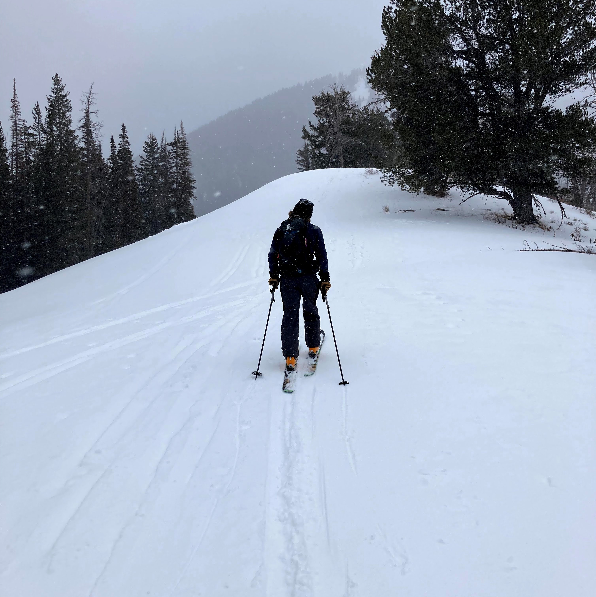

ABOUT ME
I am a Salt Lake City-based web developer with a bachelor's degree in Kinesiology and a minor in Nutrition from the University of Utah. Plot twist: I have now found my true passion in Web Development! I enjoy solving puzzles, learning new skills, and creating well-organized and easy-to-navigate applications to provide a quality user experience. I support my teammates through encouragement and believe that we win and lose together. In my downtime, I am an avid snowboarder. You'll find me exploring the backcountry or tearing up the trails at Snowbird.
We all have something to learn from each other so let’s connect!